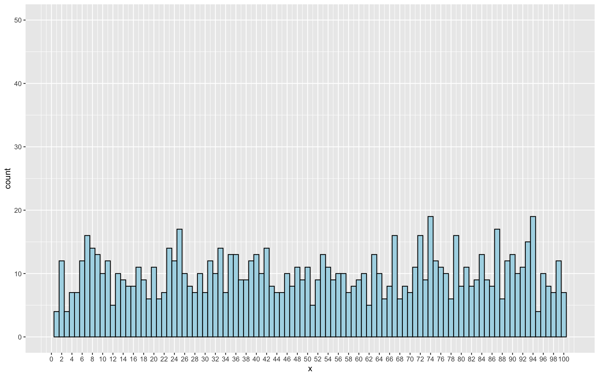
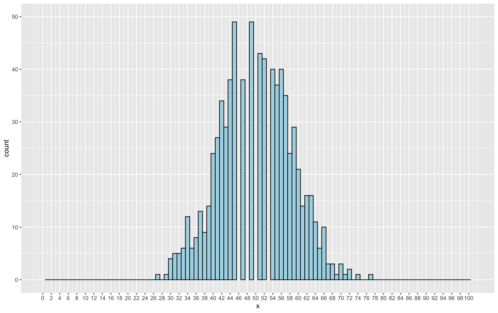
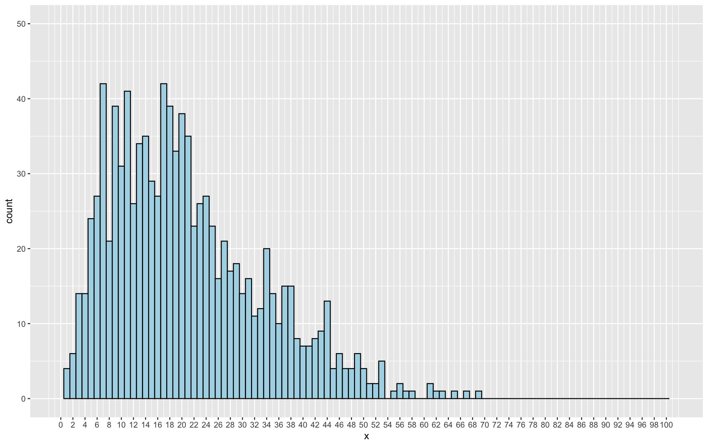
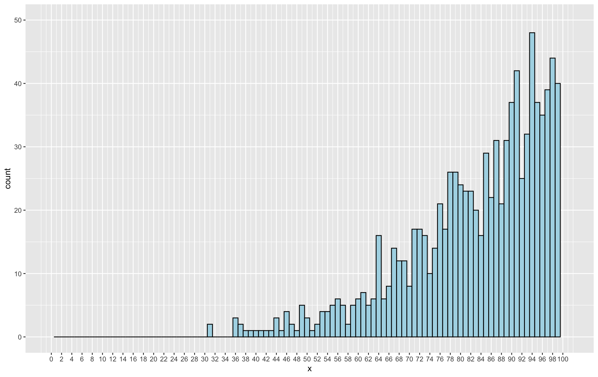
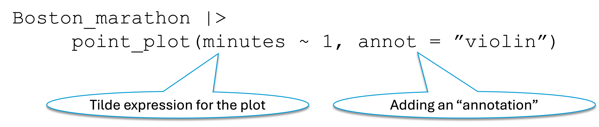
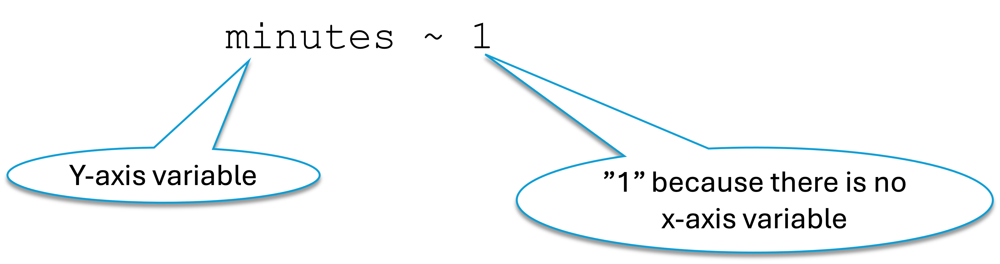
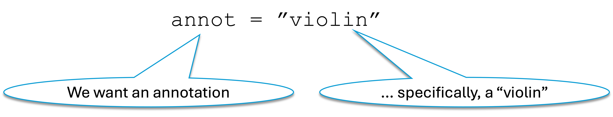
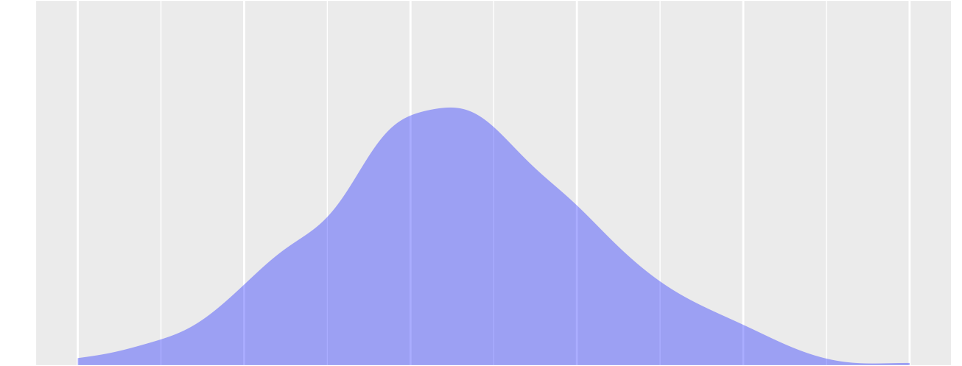
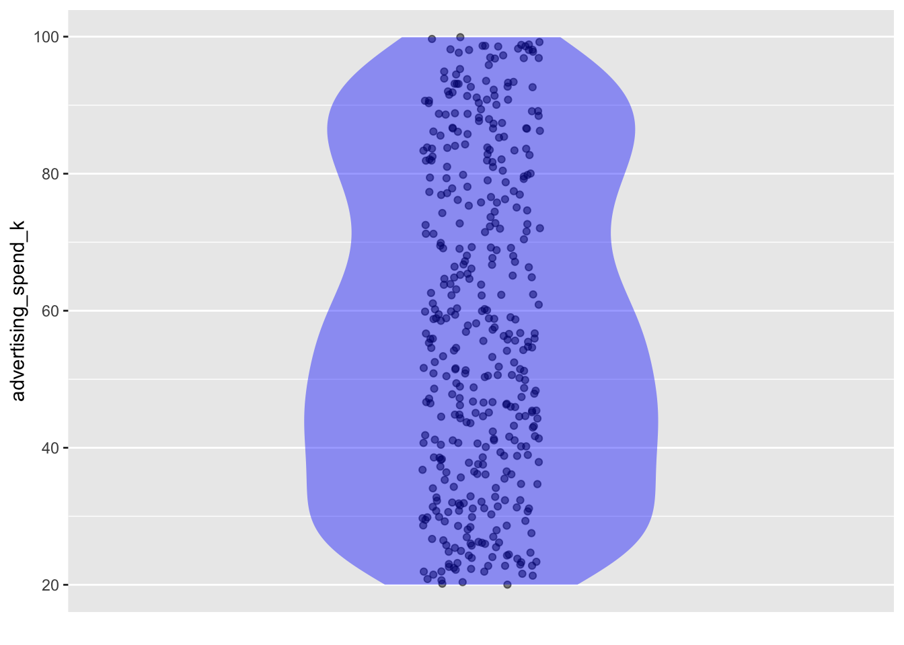

| year | name | country | time | sex | minutes |
|---|---|---|---|---|---|
| 1904 | Michael Spring | United States | 02:38:04 | male | 158 |
| 2015 | Caroline Rotich | Kenya | 02:24:55 | female | 145 |
| 1973 | Jon Anderson | United States | 02:16:03 | male | 136 |
| 1897 | John J. McDermott | United States | 02:55:10 | male | 175 |
| 1973 | Jacqueline A. Hansen | United States | 03:05:59 | female | 186 |
| 1957 | John J. Kelley | United States | 02:20:05 | male | 140 |
| 2008 | Robert Kipkoech Cheruiyot | Kenya | 02:07:46 | male | 128 |
| 2016 | Lemi Berhanu | Ethiopia | 02:12:45 | male | 133 |
| 1975 | Bill Rodgers | United States | 02:09:55 | male | 130 |
| 1912 | Michael J. Ryan | United States | 02:21:18 | male | 141 |
| 1942 | Bernard Joseph (Joe) Smith | United States | 02:26:51 | male | 147 |
| 1985 | Lisa Larsen-Weidenbach | United States | 02:34:06 | female | 154 |
| 1929 | John C. Miles | Canada | 02:33:08 | male | 153 |
| 1986 | Robert de Castella | Australia | 02:07:51 | male | 128 |
| 1931 | James P. Henigan | United States | 02:46:45 | male | 167 |
| 1994 | Uta Pippig | Germany | 02:21:45 | female | 142 |
| 1972 | Olavi Suomalainen | Finland | 02:15:39 | male | 136 |
| 2019 | Lawrence Cherono | Kenya | 02:07:57 | male | 128 |
| 2001 | Catherine Ndereba | Kenya | 02:23:53 | female | 144 |
| 2015 | Lelisa Desisa | Ethiopia | 02:09:17 | male | 129 |
3 Using Violin Plots to Visualize Distribution
This chapter talks about visualizing variability.
Learning outcomes
After completing this chapter you will be able to:
Demonstrate these outcomes related to shapes of distributions:
- Given a distribution as histogram, explain what the height of a bar represents
- Given a distribution as a violin plot, explain what the width of a violin at any point represents
- Given a violin plot, identify the point(s) having the highest and lowest densities
- Identify whether a given distribution shown either as a histogram or as a violin plot or as a density plot is
- uniform
- symmaetric bell shaped
- multi-modal
- skewed and in which way
Demonstrate these outcomes related to generating violin plots using R:
- Given a data frame and a numerical variable, write R code to generate a violin plot to study the distribution of the variable
- Explain the two important parts of the plot area in a violin plot
- In the plot, identify which part represents the data and whih part represents the annotation
- Explain the tilde espression used to generate violin plots of single variables
- Generate a violin plot to comnpare the distributions of a single numerical variable corresponding to a categorical variable
We have already looks at the concept of variable. We have used the term to refer to a column of a data frame. We explained the rationale for the name from the fact that the values in a single column of a data frame vary. That is, not all the rows of a column have the same value. For example, we see in Table 3.1 that the values in the column minutes vary – that is, not all the values in the column are the same. The same is true of every column.
Take care to note that we are not saying that every value in a column has to be distinct. Values can repeat. However we have variety in a column as long as all the values are not the same. Very rarely will you come across data frames in which all the values of a column are the same. In this case the column does not serve any useful purpose for data analysis.
In this course, we deal only with variability in numerical variables. Statistics deals with variability in categorical variables as well, but this book does not consider this in any depth.
3.1 Distribution
Before we look at the distribution of variables in a data frame, let us look at variability in sets of numbers to understand the idea of distribution. In this chapter we focus on visualization alone. The next chapter goes into measuring variation precisely.
3.1.1 Uniform distribution
Suppose we have 1000 numbers with each one being an integer between 1 and 100. Some of the numbers in this data might be 45, 23, 46, 89, 1, 23, 45, 56, and so on. If each number occurs exactly 10 times – that is we have 10 ones, 10 twos and so on up to 10 hundreds, we have what is called as the uniform distrigution. In a uniform distribution, each number in the range of the list occurs the same number of times.
Figure 3.1 shows a histogram of a set of numbers. A histogram breaks up the whole range of the data points into bins. In our example, the numbers range from 1 to 100. A histogram might break this up into some number of bins. If the number of bins is 10, then the numbers between 1 and 10 will fall unto 1 bin. The numbers between 11 and 20 into the next bin and so on. In this example, the bin-width is 10 because each bin spans a range of size 10. The x-axis of the histogram shows the number values and a bar for each bin. The y axis shows how many of the numbers fall into each bin and so the pattern formed by the heights of the bars helps us to see the distribution of the numbers.
Figure 3.1 shows numbers that are perfectly uniformly distributed. We have used a bin-width of 1 to have each individual integer fall into its own bin. In a uniform distribution every number in the overall range of the numbers occurs exactly the same number of times.

Our current example deals with integers, but in general when we have numerical variables, we will deal with numbers that also have a fractional part. Histograms work in the same way for those too, except that we cannot have one bin for each distinct value as there is potentially an inficite number of values in any range.
Figure 3.2 shows an example of a set of numbers distributed approximately uniformly. For example, Each number does not occur exactly the same number of times, but they are loosely similar. For example, the number 2 seems to appear around 13 times and the number 25 seems to occur around 18 times. In practice, uniformly distributed numbers will look more like Figure 3.2 than Figure 3.1.

A numerical variable does not necessarily have to be distributed uniformly. That is each number in the range does not have to occur an equal number of times exactly or approximately. We will now look at some other commmon possibilities.
3.1.2 Bell shaped distributions
Figure 3.3 and Figure 3.4 show two bell shaped distributions. Both have their peaks around the middle of the range between 1 and 100. Which means that numbers closer to the middle – or closer to 50 – occur more frequently than those far away from 50.


Both Figure 3.3 and Figure 3.4 show bell shaped distributions that are also symmetric. That is, the shape to the left of the peak is approximately similar to the shape on the right.
So, both of these are bell shaped and symmetric, and yet they are obviously different? Can you describe how they are different?
We see that the spread* of the numbers is quite different. In Figure 3.3 the numbers are more concentrated near the middle than is the case in Figure 3.4. Consequently, the peak in the first figure is higher. For example, the numbers 47 and 51 occur nearly 50 times. In Figure 3.4, the higest frequency is around 35. We call the ends of the bell shae as tails. We see that Figure 3.4 has fatter tails.
We have seen three different possibilities for how a set of 1000 numbers in the range 1 to 100 can be distributed. Even though the averages of a set of numbers and even their range might be the same they can still be distributed very differently.
3.1.3 Multi-modal distributions
In Figure 3.3 and Figure 3.4 we saw distributions that each had a single peak. This does not have to be the case. shows a case where we have two peaks.

3.1.4 Skewed distributions
Thus far, we have seen distributions in which the shape has always been symmetric – explicitly so in the bell-shaped examples, but also tru for the uniform examples. Figure 3.6 and Figure 3.7 show examples of asymmetric distributions. The first has a long tail on the right and is said to be right-skewed and the second has its tail on the left and is said to be left-skewed.


3.2 Violin plots
Now that we have clarified the idea of a distribution let us look at distributions of numerical variables through violin plots. These plots serve the same function as the histograms we have looked at in the previous section, but we can do more. Let us start off by looking at a violin plot of the variable minutes from the Boston_marathon data frame
Boston_marathon |>
point_plot(minutes ~ 1, annot = "violin")
The width of the violin at any point on the y-axis shows the relative frequency of data values close to that point. The widest part of the violin occurs at around 145 minutes. This means that the maximum concentration of winning times in the dataset is close to 145 minutes. The plot does not tell us exactly what the frequency is. The width only shows the relative frequency. Looking at where the violin is very narrow, we can say that very few runners took more than 175 minutes to complete the race. Also, relatively low number sof people took less than about 125 minutes. We can see a higher density of points around the broad regions of the violin and a low density in the narrow areas of the violin.
3.2.1 Elements of the plot
Until now, the plots we have generated using point plot have only shown the actual points. However, in Figure 3.8 we see two distinct elements:
- a jittered plot of the individual points
- a violin-shaped solid area – an annotation encompassing the points themselves
The points represent the raw data and the violin adds an annotation that interprets the data in some way. Here, the interpretation is a violin plot that hels us visualize the distribution of the values.
3.2.2 Examining the code
We examine the code now. In the code for Figure 3.8, we can see two arguments for the point_plot function. The first argument specifies the tilde expression mapping the axes. The second specifies the type of annotation we want. Figure 3.9 shows the code with the two arguments labeled.

Figure 3.10 explains the tilde expression used for the plot. Mapping of minutes to the y-axis conforms to what we did before. This plot deals with just a single variable – we have no variable on the x-axis. When there is no variable on the x-axis, we conventionally that by just using “1” for the x-axis variable.

Figure 3.11 explains the second argument in generating a violin plot.

3.3 Violin plots and distribution shapes
The violin plot displays vertical reflectional symmmetry. We can get all the information that the plot conveys just by slicing the plot vertically down the middle and looking at either of the two chunks.
When we first talked about the various distribution shapes like uniform, symmatric bell-shaped, and skewed, we used histograms to convey the ideas. We can deduce the same information from violin plots as well. In the next section, we will see a few more examples. We will discuss distribution shapes in the context of those examples.
3.3.1 More examples
We see a few more examples to reinforce the idea. Figure 3.12 shows a violin plot of the variable price from the price_demand data frame.
price_demand |>
point_plot(price ~ 1, annot = "violin")
If we look at only the left or right half of Figure 3.12, turn it right by 90 degrees and get rid of the display of the individual points, we get Figure 3.13 – a symmetric bell-shaped distribution.

Figure 3.14 shows a violin plot of the balance variable from the acct_type_balance data frame.
acct_type_balance |>
point_plot(balance ~ 1, annot = "violin")
We can see from Figure 3.12 that price is bell-spaped and unimoda,but not symmetric. It is skewed towards the lower values because the tail is at the bottom. If we slice and rotate it as before then we would say that it is skewed left.
Next we look at the distribution of advertising_spend_k from the advertising_sales_channel data frame. Figure 3.15 shows the violin plot. From it we see that advertising_spend_k follows a nearly uniform distribution, but not poerfectly so. It is mildly bimodal.
advertising_sales_channel |>
point_plot(advertising_spend_k ~ 1, annot = "violin")

3.4 Comparing distributions with violin plots
Thus far, we have examined distributions of individual variables in isloation. In statistics we often want to compare distributions. For example, in the acct_type_balance data frame, how does the distribution of balance for Checking accounts compare with that for Savings accounts?
acct_type_balance |>
point_plot(balance ~ bank_account_type, annot = "violin")
Since we want to compare the two violins corresponding to the two different account types, we now have bank_account_type on the x-axis and our tilde expression reflects this.
Figure 3.16 shows several things: - account balances in Savings accounts are generally larger - account balances of Savings accounts are distributed in an almost symmetrical bell shape with the maximum density around $6,000. - account balances of Checking accounts are generally smaller than those of Savings accounts - account balances of Checking accounts are bell shaped, but skewed towards lower values with the maximum density around $5,400 or so.
- As another example of comparing distributions, let us use the advertising_sales_channel data frame to compare the distribution of weekly_sales_k for different channels .
advertising_sales_channel |>
point_plot(weekly_sales_k ~ channel, annot = "violin")
Figure 3.17 tells us the following: - weekly_sales_k values are generally lower for the Retail Promo channel - for the Retail Promo channel weekly_sales_k is distributed symmateically with three short peaks - weekly_sales_k values are almost uniformly distributed for the Search Ads channel and have a much larger range than the Retail Sales channel